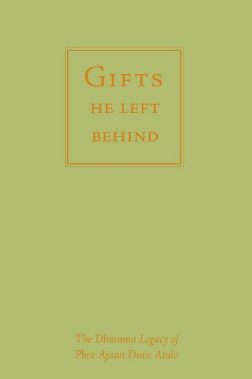

Reading: Gifts He Left Behind by Ajahn Dune: Introduction. Read by Ajahn Ahiṃsako.
Our Roots in the Thai Forest Tradition [2014], Session 24, Excerpt 2
“To whom did you attribute the different formulation of the Four Noble Truths?” Answered by Ajahn Pasanno. [Four Noble Truths] [Ajahn Dune ] // [Ajahn Mun] [Geography/Thailand] [Wat Burapha] [Seclusion] [Personality] [Ajahn Pasanno]
Quote: “Why do you let your mind go out there?” — Ajahn Dune regarding the noise of the elephant festival. [Contact]
Reference: Gifts He Left Behind by Ajahn Dune.
Thanksgiving Retreat 2012, Session 7, Excerpt 6
“What about Luang Por Dune, he looks so mellow; was he ever animated?” Answered by Ajahn Pasanno. [Ajahn Dune] [Personality] // [Ajahn Pasanno] [Culture/Thailand] [Humor]
Reference: Gifts He Left Behind by Ajahn Dune.
Our Roots in the Thai Forest Tradition [2014], Session 17, Excerpt 3
Format of Gifts He Left Behind by Ajahn Dune.
Our Roots in the Thai Forest Tradition [2014], Session 24, Excerpt 1
Reading: Gifts He Left Behind by Ajahn Dune: Biographical Sketch and pp. 105-109, 1, 3, 6-9, 11-12, 15-19, 77. Read by Ajahn Ahiṃsako.
Our Roots in the Thai Forest Tradition [2014], Session 24, Excerpt 4
“Would you please repeat the phrasing of the Four Noble Truths and the mind that you spoke about this morning? (I am grasping and suffering.)” Answered by Ajahn Pasanno. [Four Noble Truths] [Clinging] [Suffering] // [Ajahn Dune]
Reference: Gifts He Left Behind by Ajahn Dune, p. 3.
Thanksgiving Retreat 2012, Session 4, Excerpt 9
“Can you say a little more about ‘the mind going outside itself’—what that means and how it is dukkha?” Answered by Ajahn Pasanno. [Proliferation] [Suffering] [Cause of Suffering ] // [Knowing itself] [Craving] [Tranquility]
Reference: Gifts He Left Behind by Ajahn Dune, p. 3.
Quote: “Still, flowing water.” — Ajahn Chah. [Ajahn Chah] [Equanimity] [Similes]
Reference: Collected Teachings of Ajahn Chah, pp. 380-381.
Thanksgiving Retreat 2012, Session 5, Excerpt 15
“Could you offer some reflections on experiencing mind as mind in the Noble Eightfold Path?” Answered by Ajahn Pasanno. [Eightfold Path] [Chanting] [Chithurst] [Amaravati] [Mindfulness of mind ] // [Noting] [Ajahn Ṭhānissaro] [Nature of mind] [Knowing itself]
Reference: Amaravati Chanting Book, p. 97.
Sutta: MN 10.34: Mindfulness of mind.
Follow-up: “Does this relate to Luang Por Dune’s reformulation of the Four Noble Truths where it says, ‘The mind seeing the mind?’” [Ajahn Dune] [Four Noble Truths] [Mindfulness of mind ]
Reference: Gifts He Left Behind by Ajahn Dune, p. 3.
Quote: “An inward-staying unentangled knowing.” — Upāsikā Kee Nanayon. [Upāsikā Kee Nanayon]
Kathina Q&A with the Chithurst Community [2025], Session 1, Excerpt 2
Readings by Ajahn Pasanno:
Sutta: SN 22.53, Khandhasaṁyutta, “Engagement.”
Sutta: SN 22.54, Khandhasaṁyutta, “Seeds.”
Sutta: MN 22.36.
Sutta: SN 12.64.
Sutta: Snp 758-759.
Sutta: SN 12.38.
Skill in Questions by Ajahn Ṭhānissaro p. 349.
Reading about Luang Por Dun (similar to Gifts He Left Behind by Ajahn Dune, p. 77).
The Fourth Foundation of Mindfulness [2013], Session 36
Reading: “It’s Easy if You are not Attached,” Gifts He Left Behind by Ajahn Dune, p. 77. Read by Ajahn Ahiṃsako. [Ajahn Dune] [Wat Burapha] // [Rains retreat]
Quote: “It’s the nature of light to be bright; it’s the nature of noise to be loud.” [Contact ] [Sense restraint] [Discernment]
Our Roots in the Thai Forest Tradition [2014], Session 24, Excerpt 7
Comment: [This discussion of ‘Nibbāna is the cessation of becoming’ (AN 10.7)] reminds me of the last testament of a well-known teacher: ‘Rest in purity and evenness and do something for the benefit of others.’ Read by Ajahn Pasanno. [Nibbāna] [Equanimity] [Compassion]
Response by Ajahn Pasanno. [Simplicity]
Reading: “The Safest Way to Dwell,” Gifts He Left Behind by Ajahn Dune, p. 102. [Ajahn Dune]
Quote: “As for me, I dwell with knowing. … Knowing is the normality of mind that’s empty, bright, pure, that has stopped fabricating, stopped searching, stopped all mental motions—having nothing, not attached to anything at all.” [Knowing itself] [Cessation]